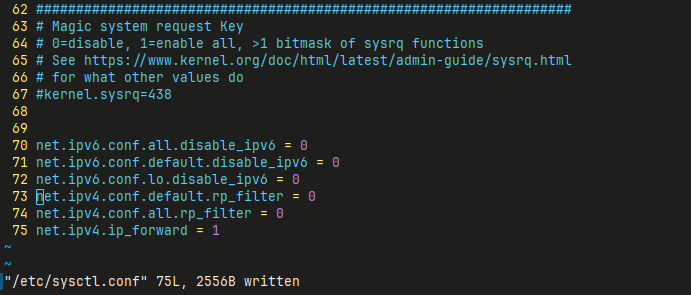
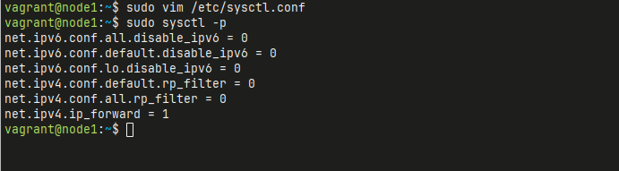
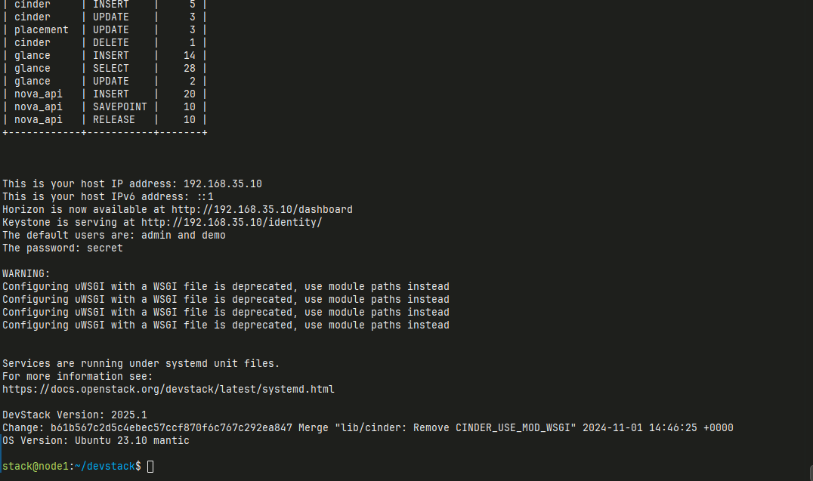
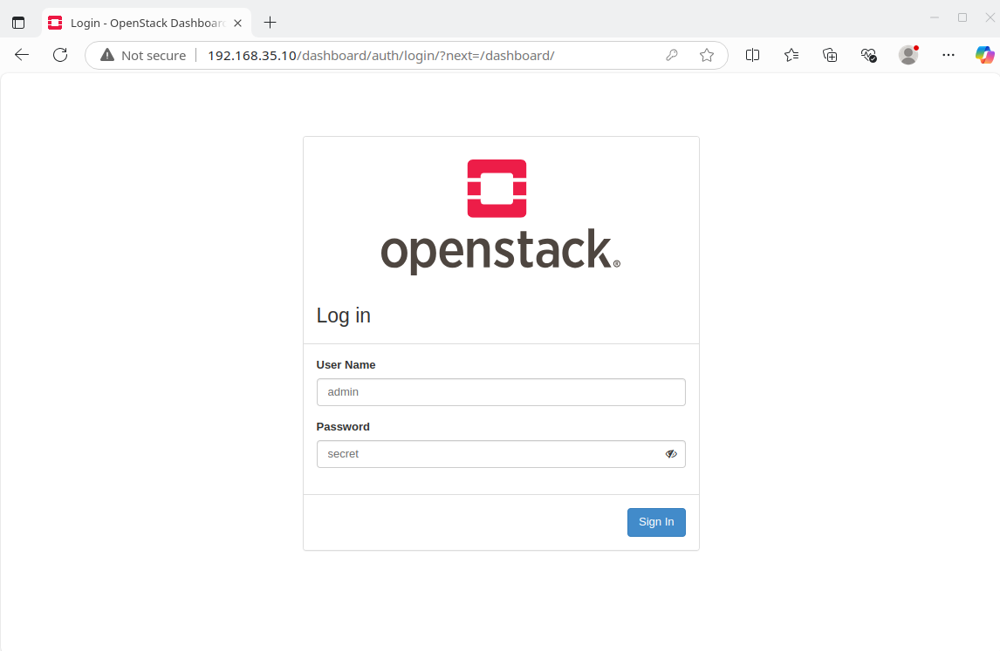
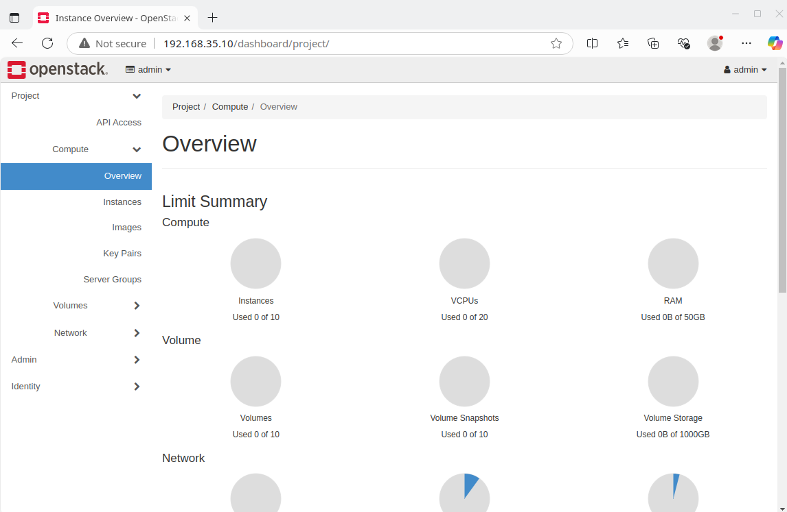
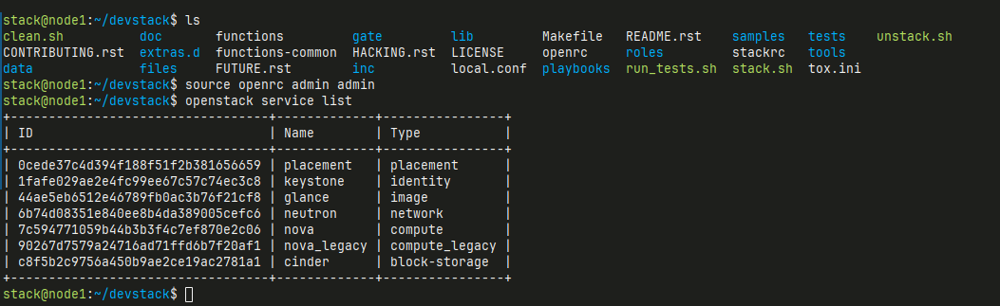

Installation
DevStack will clone the OpenStack source code from the official OpenStack repository, which is hosted on OpenDev (formerly known as Gerrit). The URL for cloning the OpenStack repositories is:
DevStack, during its setup and installation process, automatically clones the relevant OpenStack services from this repository. The devstack script will perform the following steps:
- Clone the OpenStack repository: DevStack clones the OpenStack source code into the directory where it is installed.
- Install required dependencies: It installs dependencies such as Python packages, libraries, and tools that are required to run OpenStack services.
- Configure services: DevStack configures OpenStack services (such as
keystone,nova,glance,neutron, etc.) based on the configuration specified in thelocal.conffile. - Start services: After configuring, DevStack will start the OpenStack services on the system.
By default, the main OpenStack repositories (such as nova, keystone, glance, neutron, etc.) are cloned from https://opendev.org/openstack, and these repositories contain the code for the OpenStack services that you deploy in your environment.
If you want to manually update or clone a specific repository, you can also browse the official OpenStack Git repositories at https://opendev.org/openstack.
Disble IPV6
-
Step 1 Open the file in a text editor, e.g., sudo vim /etc/sysctl.conf, and add the following lines to disable IPv6, set up reverse path filtering, and enable IPv4 forwarding: (append to end of files)
content:  -
Step 2 Apply the Changes:
- After saving the file, apply the settings with the following command: 
Create Stack User
- Step 3 Prepare the system
DevStack works best on a fresh installation of a supported Linux distribution, like Ubuntu 20.04 or CentOS/RHEL 8. Ensure your system meets these requirements:
- Create a non-root user (e.g., stack) with sudo privileges: Switch to stack user: Explaination:
- This command uses sudo to switch to the stack user.
- The -i flag simulates a full login, so it initializes the environment as if the stack user had logged in directly.
- It respects the sudoers configuration (i.e., the specific privileges and restrictions set for the stack user).
- The stack user’s environment variables (like HOME and PATH) and login shell are loaded, providing a clean environment.
Clone Source Code and Run
-
Step 4 Clone the DevStack Repository:
Create local.conf inside devstack folder, Please copy content below and paste directly in terminal
cat <<EOF >> local.conf [[local|localrc]] IP_VERSION=4 SERVICE_IP_VERSION=4 TUNNEL_IP_VERSION=4 HOST_IP=192.168.35.10 SERVICE_HOST=192.168.35.10 MYSQL_HOST=192.168.35.10 RABBIT_HOST=192.168.35.10 GLANCE_HOSTPORT=192.168.35.10:9292 ADMIN_PASSWORD=secret DATABASE_PASSWORD=\$ADMIN_PASSWORD RABBIT_PASSWORD=\$ADMIN_PASSWORD SERVICE_PASSWORD=\$ADMIN_PASSWORD LOGFILE=/opt/stack/logs/stack.sh.log FORCE=yes EOF
Change IP address to vm ip
- Change IP address from local.conf to VM ip
- Change ADMIN_PASSWORD
- Step 5 Run the DevStack Installation: This will take a 15 - 20 minutes, largely depending on the speed of your internet connection. Many git trees and packages will be installed during this process.

Other command
- ./unstack.sh
- ./clean.sh
- Step 6 Access the Openstack Dashboard
- Open Browser login with user admin and password specified in ADMIN_PASSWORD in local.conf


- Step 7 Verify the installation
- to check if services are running

- Step 8 Restart the DevStack Services: To "restack" OpenStack after stopping DevStack or halting your environment, you can follow these steps: